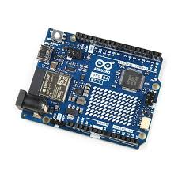
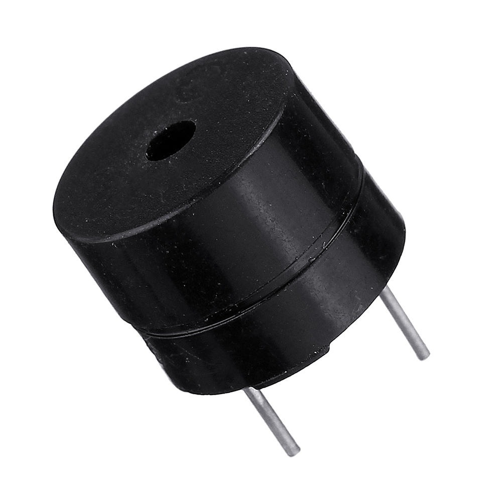
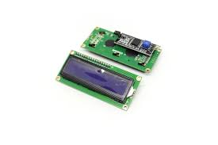

HIGH SCORE
--
LAST SCORE
--
LAST PRIZES
--
บทคัดย่อ
Spin Machine เป็นโปรเจคมินิเกมเพื่อความผ่อนคลายและความเพลิดเพลินในเวลาว่าง โดยใช้ Arduino Uno R4 WiFi ในการจำลองการทำงานของเกมที่ แสดงผ่านหน้าจอ LCD 16×2
การทำงานของเกม : ระบบใช้ปุ่มกดเพื่อเริ่มเกม จากนั้นโปรแกรมจะทำการประมวลผลอัลกอริทึมการสุ่มสัญลักษณ์และตรวจสอบเงื่อนไขการชนะตามที่กำหนดไว้
Hardware

Arduino UNO R4 WiFi
The project's 'brain,' this microcontroller runs the game logic and uses built-in Wi-Fi to send scores online.

Buzzer
Provides audio feedback for the game, playing melodies for wins or simple tones for button presses.

LCD 16x2
16-character, 2-line display used to show player credits, spin results, and winning messages.